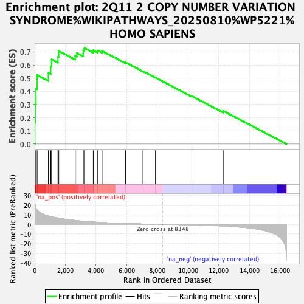
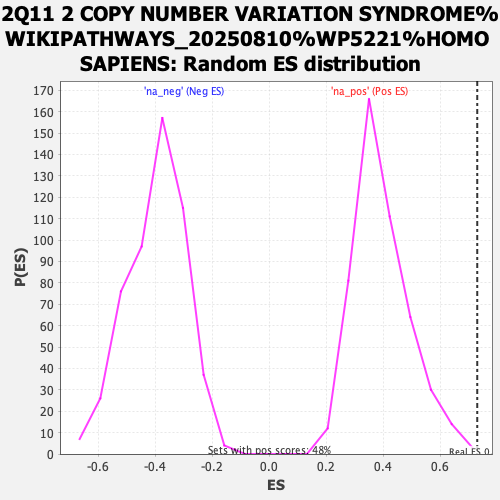

| Dataset | ranked_gene_list |
| Phenotype | NoPhenotypeAvailable |
| Upregulated in class | na_pos |
| GeneSet | 2Q11 2 COPY NUMBER VARIATION SYNDROME%WIKIPATHWAYS_20250810%WP5221%HOMO SAPIENS |
| Enrichment Score (ES) | 0.7298768 |
| Normalized Enrichment Score (NES) | 1.8518798 |
| Nominal p-value | 0.002079002 |
| FDR q-value | 0.07483401 |
| FWER p-Value | 0.596 |

| SYMBOL | RANK IN GENE LIST | RANK METRIC SCORE | RUNNING ES | CORE ENRICHMENT | |
|---|---|---|---|---|---|
| 1 | MMS19 | 13 | 23.201 | 0.1640 | Yes |
| 2 | MAPK3 | 38 | 19.871 | 0.3037 | Yes |
| 3 | CIAO1 | 87 | 17.151 | 0.4226 | Yes |
| 4 | TMEM127 | 162 | 14.918 | 0.5240 | Yes |
| 5 | SNRNP200 | 894 | 8.731 | 0.5414 | Yes |
| 6 | PLXNB2 | 1050 | 8.117 | 0.5896 | Yes |
| 7 | ARID5A | 1102 | 7.926 | 0.6428 | Yes |
| 8 | SEMA4C | 1517 | 6.589 | 0.6644 | Yes |
| 9 | CNNM4 | 1571 | 6.430 | 0.7068 | Yes |
| 10 | CNNM3 | 2643 | 4.015 | 0.6700 | Yes |
| 11 | ERBB2 | 2750 | 3.847 | 0.6908 | Yes |
| 12 | CIAO2B | 3160 | 3.292 | 0.6893 | Yes |
| 13 | ANKRD23 | 3166 | 3.278 | 0.7122 | Yes |
| 14 | KANSL3 | 3245 | 3.154 | 0.7299 | Yes |
| 15 | STARD7 | 3819 | 2.485 | 0.7126 | No |
| 16 | COX11 | 4111 | 2.197 | 0.7104 | No |
| 17 | FER1L5 | 4392 | 1.929 | 0.7070 | No |
| 18 | DUSP2 | 5925 | 0.882 | 0.6198 | No |
| 19 | ITPRIPL1 | 7056 | 0.349 | 0.5534 | No |
| 20 | COL2A1 | 7870 | 0.104 | 0.5045 | No |
| 21 | CIAO2A | 10240 | -0.566 | 0.3640 | No |
| 22 | MAPK1 | 12285 | -1.758 | 0.2518 | No |
